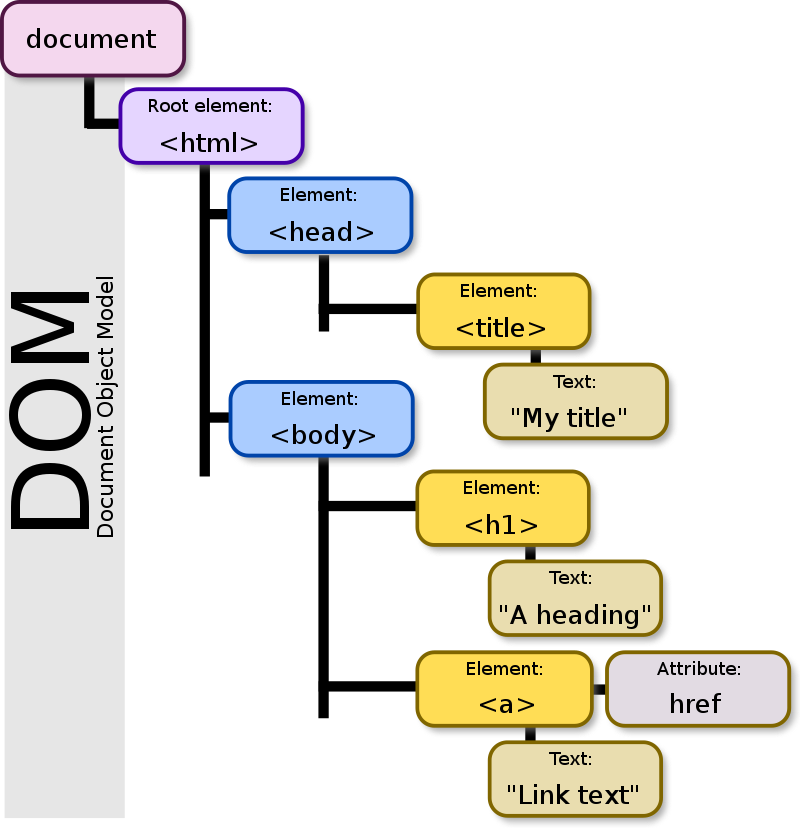

Object methods, "this"
- objects represent info about a person, place, thing, or idea
- you can store functions as a property of an object; they then become called a method
- the keyword "this" is like a wild card that can refer to any object that calls the function that "this" is used in
- if "this" is inside of a function, it should be called with an object
- "this" has no value until it is called; when it is called, the value is the object
- arrow functions use "this" from the outer "normal" function
Ch. 5: Objects
- objects are a way of grouping info together thus making it easier to find what you're looking for
- objects have properties which store key-value pairs seperated by a comma
- to write an object literal:
const objectLiteral = {name: valueOfName, method() {statements}, array: [value, value, value]};
- you can create an empty object by just using empty brackets: {}
- you can access an object's properties with dot notation: object.propertyKey
- you can also access an object's properties with bracket notation: object["propertyKey"]
- undefined will be returned if the property doesn't exist
- to add a property to an object:
objectName.newPropertyKey = "newPropertyValue;"
- to change a property value:
objectName.propertyKey = "newPropertyValue";
- to remove a property:
delete objectName.propertyKey;
- objects can be nested inside of other objects
- if two or more variables are referencing the same object, any changes made to the object will affect both variables
- you can use objects as parameters in a function
- namespacing = by storing functions inside of objects, the possibility of function name clashes is greatly reduced because the function then has to be referred to with dot notation: myObject.functionName()
- JSON: link to JSON section from textbook
- functions cannot be stored in JSON format
- property keys and values need to be double quoted
- to create an object in JSON:
const objectName = '{"keyName": "value","anotherKeyName": "anotherValue", "keyNameArray": ["value","value","value"]}'
- to take a JSON object and make it a JavaScript object:
JSON.parse(objectName);
- to take a JavaScript object and make it a JSON object:
JSON.stringify(objectName);
- JSON data is easily understood by different programming languages
- the math object is built into JavaScript and has lots of cool properties that store constant math numbers (like pi) and math operations
- the date object and its properties
- regular expression objects show a pattern that the computer is looking for
Ch. 6: Document Object Model
- everything within an HTML document is represented as nodes in a tree-like structure 
- the DOM can be accessed through the built-in object called "document"
- when you access elements on the DOM, you will get either a node object or node list
- any white space in the document is turned into an empty text node
- node lists are not arrays because you cannot use most of the array methods on them
- node lists do, however, have a length property and the ability to access a particular item in the list through index notation
- you can use for loops on node lists
- in order to turn a node list into an array, you can use the Array.from() method:
const imageArray = Array.from(document.images);
- to access things from the DOM, use:
document.getElementByID("idName")
document.getElementsByTagName("htmlTagGoesHere") for example, document.getELementsByTagName("p") would return a node list with all of the paragraphs in the document
document.getElementsByClassName("classNameHere")
document.querySelector("selectorHere") returns the FIRST instance of that query selector
document.querySelectorAll("selectorHere") returns a node list of ALL of the instances of that query selector - differences between query selectors and get element by id/class/tag:
- query selectors can use CSS selectors, including pseudo classes
- query selectors can be used on things other than the document: here's an example of that from the textbook
- query selectors are not live node lists
- you can find and change an element's attributes with:
.getAttribute("attributeName") and .setAttribute("attributeName", "newAttributeValue")
- info about className and classList properties
- the classList.toggle() method is especially useful
- here's how to creat an element, add text, and append it
- .innerHTML is a much better, faster way to edit nodes because it will automatically create element nodes and text nodes from a long string
- .style property allows you to change the CSS of an element, but it is important to note that any dashes need to be replaced with camelCase; for example: anElement.style.backgroundColor instead of .background-color
Questions
- "Scripts inserted using innerHTML won't run." What does that mean?
- What is the difference between a live node list and a static node list? Live collections?